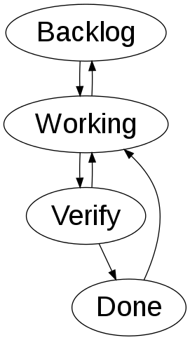

HTML Hypermedia APIs
and
Adaptive Web Design
Gustaf Nilsson Kotte / @gustaf_nk
About me
Two areas of interest
- Hypermedia APIs - No application logic in API clients
- Adaptive Web Design - Multi-device web
Working nicely together!
Demo, Kanban board
HTML Hypermedia API + Adaptive Web Design

Prefer fat APIs over fat clients

 http://martinfowler.com/articles/richardsonMaturityModel.html
http://martinfowler.com/articles/richardsonMaturityModel.html
Hypermedia APIs
What is the Hypermedia Constraint?
You do stuff by reading pages
and then either
follow links or submit forms.
— Jon Moore
Use HTML for Hypermedia APIs
- Lots of hypermedia controls
- Old, standardized, everybody knows HTML
- Good tooling support
More...
- Great for learning about hypermedia!
Interlude
JSON is ok :)
Also, hypermedia is a bit harder to consume in general
Example: Microformats2, entities
<li class="h-item">
<div class="p-name"><%= item.name %></div>
<div class="p-status"><%= item.status %></div>
<div class="p-description"><%= item.description %></div>
<div class="p-forms">
...
</div>
<div class="p-links">
...
</div>
</li>
Example: Microformats2, forms
<div class="p-forms">
<form data-rel="move backlog" action="/items/backlog" method="POST">
<input name="id" type="hidden" value="4">
<input title="submit" type="submit" value="Move to backlog">
</form>
<form data-rel="move verify next" action="/items/verify" method="POST">
<input name="id" type="hidden" value="4">
<input title="submit" type="submit" value="Move to verify">
</form>
</div>
Idea: A common goal
HTML Hypermedia APIs ∩ Mobile first
(also, reduce number of roundtrips)
Adaptive Web Design
Responsive web design
Feature detection
Device APIs
Performance
Conditional loading
Content strategy
Touch
Platform optimization
Ergonomics
...
http://bradfrostweb.com/blog/mobile/beyond-media-queries-anatomy-of-an-adaptive-web-design
Progressive Enhancement
The API and the web
can be the same thing!
HTML Hypermedia APIs ❤ Mobile First
Mobile First ❤ all web browsers and devices
The API and the web
can be the same thing!
HTML Hypermedia APIs
+
Adaptive Web Design
HTML Hypermedia APIs + AWD
First, an exit strategy
www.example.com
api.example.com
High level view
- Same code base for web and API
- Separate URLs
- Content first + minimize roundtrips
- Microformats2 as semantic layer or RDFa [Lite]
- Agressive enhancement
- Other AWD techniques :)
- Optimize API perspective
Demo: changing the application
Summary
HTML Hypermedia APIs ❤ Mobile First
Mobile First ❤ all web browsers and devices
Further exploration, books
Further exploration, online
Thank you!
Gustaf Nilsson Kotte / @gustaf_nk